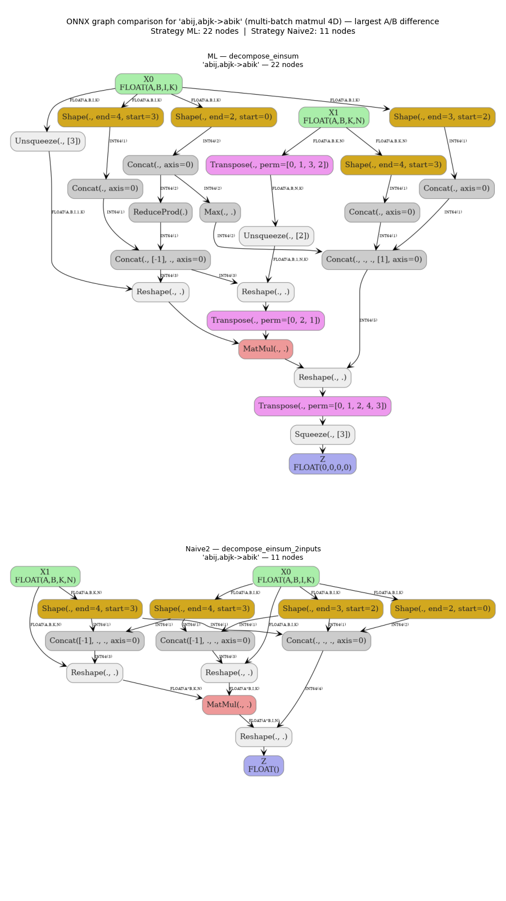
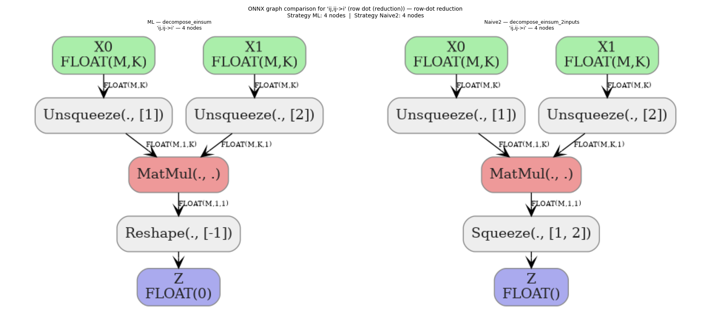
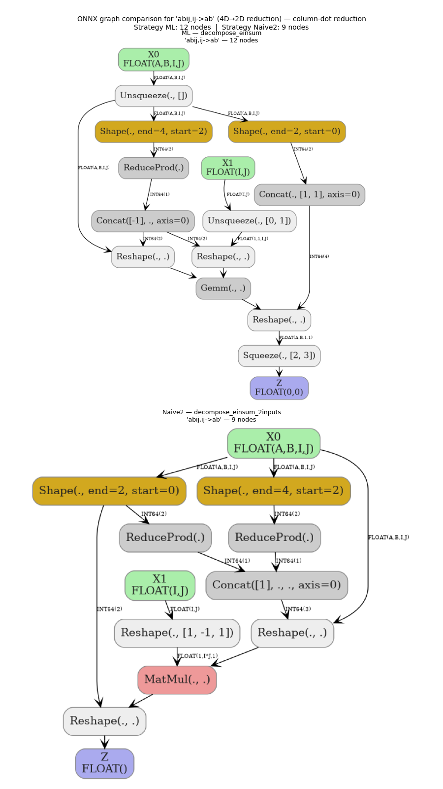
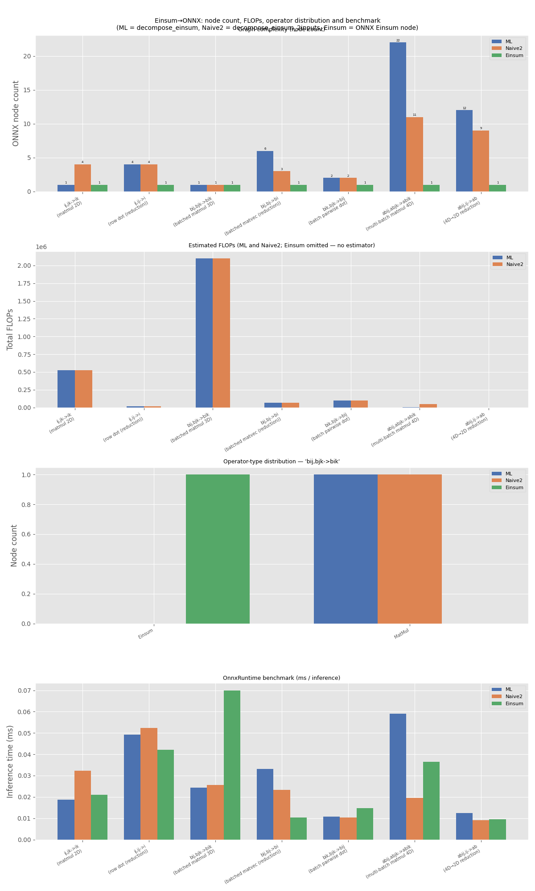
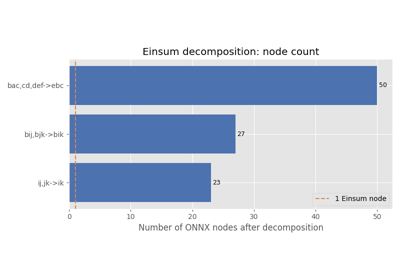

Note
Go to the end to download the full example code.
Comparing Computational Cost of Three Einsum→ONNX Strategies#
decompose_einsum(),
decompose_einsum_2inputs(), and the native
ONNX Einsum operator all represent the same computation but as very
different ONNX graphs:
decompose_einsum (strategy ML) — uses the
EinsumSubOp/GraphEinsumSubOpframework ("numpy"strategy by default). It builds a step-by-step decomposition that handles an arbitrary number of input operands.decompose_einsum_2inputs (strategy Naive2) — a completely independent implementation restricted to exactly two input operands. It classifies every index letter into one of four roles (batch, contract, left, right) and emits a fixed
Transpose → Reshape → MatMul → Reshape → Transposepipeline.ONNX Einsum (strategy Einsum) — a single native
Einsumnode that delegates the computation entirely to the ONNX runtime. This is the most compact representation (1 node) but requires runtime support for theEinsumoperator (opset 12+).
This example loops over seven representative equations — including 2-D, 3-D, and 4-D cases as well as equations with reduction (contracted indices absent from the output) — and for each one:
Builds all three ONNX models.
Computes the symbolic FLOPs cost (using string-typed input dimensions so the cost formula stays general).
Evaluates concrete FLOPs by substituting actual tensor shapes.
Counts the distribution of operator types in each graph.
Runs a short runtime benchmark with
onnxruntime.Renders the graphs for the equation with the largest structural difference between strategies A and B.
import time
from collections import Counter
import matplotlib.pyplot as plt
import numpy as np
import onnx
import onnx.helper as oh
import onnxruntime
import pandas as pd
from yobx.doc import plot_dot
from yobx.helpers.einsum_helper import decompose_einsum, decompose_einsum_2inputs
from yobx.xshape import BasicShapeBuilder, InferenceMode
Helper: single-node ONNX Einsum model (strategy C)#
sgA = "ML"
sgB = "Naive2"
sgC = "Einsum"
def make_einsum_model(equation, sh0, sh1, opset=18):
"""Creates a minimal ONNX model containing a single Einsum node (strategy C).
Both input shapes and output dims are annotated dynamically so the model
works with any concrete tensor size at runtime. Each element of *sh0* /
*sh1* may be an integer (stored as ``dim_value``) or a string symbol
(stored as ``dim_param``). Output dimensions are always fully dynamic
(``None``), since computing them symbolically would require running the
einsum — the rank is derived directly from the equation's right-hand side.
Returns:
An :class:`onnx.ModelProto` with one ``Einsum`` node and no initializers.
"""
dtype = onnx.TensorProto.FLOAT
# Derive output rank from the equation; keep output dims fully dynamic.
out_rank = len(equation.split("->")[1])
out_shape = [None] * out_rank
node = oh.make_node("Einsum", ["X0", "X1"], ["Z"], equation=equation)
graph = oh.make_graph(
[node],
"einsum_op",
[
oh.make_tensor_value_info("X0", dtype, list(sh0)),
oh.make_tensor_value_info("X1", dtype, list(sh1)),
],
[oh.make_tensor_value_info("Z", dtype, out_shape)],
)
model = oh.make_model(graph, opset_imports=[oh.make_opsetid("", opset)])
model.ir_version = 8
return model
1. Equation registry#
Each entry specifies:
equation — the einsum string
sym0 / sym1 — symbolic dimension names for the two inputs (used when computing symbolic FLOPs)
sh0 / sh1 — concrete shapes used for numerical checks and benchmarks
EQUATIONS = [
# ── 2-D equations ──────────────────────────────────────────────────────
{
"equation": "ij,jk->ik",
"label": "matmul 2D",
"sym0": ("M", "K"),
"sym1": ("K", "N"),
"sh0": (64, 128),
"sh1": (128, 32),
},
{
"equation": "ij,ij->i",
"label": "row dot (reduction)",
"sym0": ("M", "K"),
"sym1": ("M", "K"),
"sh0": (64, 128),
"sh1": (64, 128),
},
# ── 3-D equations ──────────────────────────────────────────────────────
{
"equation": "bij,bjk->bik",
"label": "batched matmul 3D",
"sym0": ("B", "M", "K"),
"sym1": ("B", "K", "N"),
"sh0": (4, 64, 128),
"sh1": (4, 128, 32),
},
{
"equation": "bij,bj->bi",
"label": "batched matvec (reduction)",
"sym0": ("B", "M", "K"),
"sym1": ("B", "K"),
"sh0": (4, 64, 128),
"sh1": (4, 128),
},
{
"equation": "bik,bjk->bij",
"label": "batch pairwise dot",
"sym0": ("B", "I", "K"),
"sym1": ("B", "J", "K"),
"sh0": (4, 16, 32),
"sh1": (4, 24, 32),
},
# ── 4-D equations ──────────────────────────────────────────────────────
{
"equation": "abij,abjk->abik",
"label": "multi-batch matmul 4D",
"sym0": ("A", "B", "I", "K"),
"sym1": ("A", "B", "K", "N"),
"sh0": (2, 3, 16, 32),
"sh1": (2, 3, 32, 8),
},
{
"equation": "abij,ij->ab",
"label": "4D→2D reduction",
"sym0": ("A", "B", "I", "J"),
"sym1": ("I", "J"),
"sh0": (2, 3, 16, 32),
"sh1": (16, 32),
},
]
2. Analysis loop#
For each equation we build all three ONNX models, attempt symbolic and concrete FLOPs estimation, collect node-type distributions, and run a micro-benchmark. Strategy C (single Einsum node) does not have a per-op FLOPs estimator, so its FLOPs are reported as N/A.
N_BENCH = 50 # repetitions for the timing benchmark
STRATEGIES = [(sgA, decompose_einsum), (sgB, decompose_einsum_2inputs), (sgC, make_einsum_model)]
rng = np.random.default_rng(42)
results = []
for spec in EQUATIONS:
eq = spec["equation"]
sh0, sh1 = spec["sh0"], spec["sh1"]
sym0, sym1 = spec["sym0"], spec["sym1"]
label = spec["label"]
feeds = {
"X0": rng.standard_normal(sh0).astype(np.float32),
"X1": rng.standard_normal(sh1).astype(np.float32),
}
row = {"equation": eq, "label": label, "sh0": sh0, "sh1": sh1}
for key, fn in STRATEGIES:
# Always build with symbolic (string) dimensions so the model is
# dynamic by default. Strategies A and B already support symbolic
# dims natively; strategy C's make_einsum_model was updated to accept
# them too.
model = fn(eq, sym0, sym1)
# Store model for graph comparison later.
row[f"model_{key}"] = model
# --- node type distribution ---
type_dist = Counter(n.op_type for n in model.graph.node)
row[f"nodes_{key}"] = sum(type_dist.values())
row[f"dist_{key}"] = dict(type_dist)
# --- symbolic + concrete FLOPs ---
# Strategy C (single Einsum node) has no per-op cost estimator; skip.
sym_total = None
sym_reason = None
conc_total = None
if key == sgC:
sym_reason = "the abstract Einsum operator has no per-op FLOPs estimator"
else:
# The model was already built with symbolic dims; run cost
# inference directly (no separate sym_model needed).
bld = BasicShapeBuilder()
cost = bld.run_model(model, inference=InferenceMode.COST)
# Pick the node whose symbolic formula contains the most dimension
# products (longest string with '*') as a proxy for the most
# compute-intensive node. Constant integer FLOPs (no '*') are
# scalar ops with negligible cost and are excluded.
sym_totals = [(op, fl) for op, fl, _ in cost if isinstance(fl, str) and "*" in fl]
if sym_totals:
sym_total = max(sym_totals, key=lambda t: len(t[1]))
else:
sym_reason = "no node produced a multi-factor symbolic formula"
# Evaluate with concrete feeds by substituting actual shapes.
cost_conc = bld.evaluate_cost_with_true_inputs(feeds, cost)
conc_total = sum(f or 0 for _, f, _ in cost_conc)
row[f"sym_{key}"] = sym_total
row[f"sym_reason_{key}"] = sym_reason
row[f"flops_{key}"] = conc_total
# --- ORT numerical check ---
sess = onnxruntime.InferenceSession(
model.SerializeToString(), providers=["CPUExecutionProvider"]
)
(out,) = sess.run(None, feeds)
expected = np.einsum(eq, feeds["X0"], feeds["X1"])
assert np.allclose(out, expected, atol=1e-4), f"Mismatch for {eq} strategy {key}"
# --- ORT benchmark ---
# Warm up, then time N_BENCH inference calls.
for _ in range(3):
sess.run(None, feeds)
t0 = time.perf_counter()
for _ in range(N_BENCH):
sess.run(None, feeds)
elapsed_ms = (time.perf_counter() - t0) / N_BENCH * 1000
row[f"ms_{key}"] = elapsed_ms
results.append(row)
3. Symbolic FLOPs formulas#
For equations where symbolic shape inference is supported, we display the
largest symbolic-cost node for each strategy. The formula uses the symbolic
dimension names supplied in the equation registry (e.g. M, K, N).
Strategy C (single Einsum node) is omitted here since cost inference is not
available for the abstract Einsum operator.
sym_rows = []
for row in results:
for key in (sgA, sgB):
sym = row[f"sym_{key}"]
reason = row[f"sym_reason_{key}"]
strategy = f"{sgA}=decompose_einsum" if key == sgA else f"{sgB}=decompose_einsum_2inp"
if sym is not None:
op_name, formula = sym
sym_rows.append(
{
"Equation": row["equation"],
"Strategy": strategy,
"Op type": op_name,
"FLOPs formula": formula,
}
)
else:
sym_rows.append(
{
"Equation": row["equation"],
"Strategy": strategy,
"Op type": op_name,
"FLOPs formula": f"(not available: {reason})",
}
)
df_sym = pd.DataFrame(sym_rows)
print(df_sym.to_string(index=False))
Equation Strategy Op type FLOPs formula
ij,jk->ik ML=decompose_einsum Gemm 2*K*M*N+M*N
ij,jk->ik Naive2=decompose_einsum_2inp MatMul 2*K*M*N
ij,ij->i ML=decompose_einsum MatMul 2*K*M
ij,ij->i Naive2=decompose_einsum_2inp MatMul 2*K*M
bij,bjk->bik ML=decompose_einsum MatMul 2*B*K*M*N
bij,bjk->bik Naive2=decompose_einsum_2inp MatMul 2*B*K*M*N
bij,bj->bi ML=decompose_einsum MatMul 2*B*K*M
bij,bj->bi Naive2=decompose_einsum_2inp MatMul 2*B*K*M
bik,bjk->bij ML=decompose_einsum MatMul 2*B*I*J*K
bik,bjk->bij Naive2=decompose_einsum_2inp MatMul 2*B*I*J*K
abij,abjk->abik ML=decompose_einsum Transpose A*B*K*N
abij,abjk->abik Naive2=decompose_einsum_2inp MatMul 2*A*B*I*K*N
abij,ij->ab ML=decompose_einsum MatMul (not available: no node produced a multi-factor symbolic formula)
abij,ij->ab Naive2=decompose_einsum_2inp MatMul (not available: no node produced a multi-factor symbolic formula)
4. Summary table: node count, FLOPs, and benchmark#
summary_rows = []
for row in results:
fa = row[f"flops_{sgA}"]
fb = row[f"flops_{sgB}"]
summary_rows.append(
{
"Equation": row["equation"],
f"#nodes({sgA})": row[f"nodes_{sgA}"],
f"#nodes({sgB})": row[f"nodes_{sgB}"],
f"#nodes({sgC})": row[f"nodes_{sgC}"],
f"FLOPs({sgA})": int(fa) if fa is not None else "N/A",
f"FLOPs({sgB})": int(fb) if fb is not None else "N/A",
f"ms({sgA})": round(row[f"ms_{sgA}"], 3),
f"ms({sgB})": round(row[f"ms_{sgB}"], 3),
f"ms({sgC})": round(row[f"ms_{sgC}"], 3),
}
)
df_summary = pd.DataFrame(summary_rows)
print(df_summary.to_string(index=False))
print(
f"\n({sgA}) = decompose_einsum ({sgB}) = decompose_einsum_2inputs "
f"({sgC}) = ONNX Einsum node ms = ms/inference"
)
Equation #nodes(ML) #nodes(Naive2) #nodes(Einsum) FLOPs(ML) FLOPs(Naive2) ms(ML) ms(Naive2) ms(Einsum)
ij,jk->ik 1 4 1 526336 524296 0.016 0.039 0.028
ij,ij->i 4 4 1 16391 16391 0.051 0.051 0.039
bij,bjk->bik 1 1 1 2097152 2097152 0.027 0.025 0.047
bij,bj->bi 6 3 1 65550 65541 0.016 0.015 0.012
bik,bjk->bij 2 2 1 101376 101376 0.010 0.012 0.044
abij,abjk->abik 22 11 1 1577 49188 0.063 0.029 0.018
abij,ij->ab 12 9 1 30 20 0.043 0.013 0.010
(ML) = decompose_einsum (Naive2) = decompose_einsum_2inputs (Einsum) = ONNX Einsum node ms = ms/inference
5. Operator-type distribution#
We look at the node-type distributions for the three strategies on a
representative equation (batched matmul bij,bjk->bik).
target_eq = "bij,bjk->bik"
target_row = next(r for r in results if r["equation"] == target_eq)
all_op_types = sorted(
set(target_row[f"dist_{sgA}"])
| set(target_row[f"dist_{sgB}"])
| set(target_row[f"dist_{sgC}"])
)
counts_a = [target_row[f"dist_{sgA}"].get(op, 0) for op in all_op_types]
counts_b = [target_row[f"dist_{sgB}"].get(op, 0) for op in all_op_types]
counts_c = [target_row[f"dist_{sgC}"].get(op, 0) for op in all_op_types]
print(f"\nNode-type distribution for '{target_eq}':")
df_dist = pd.DataFrame({"Op type": all_op_types, sgA: counts_a, sgB: counts_b, sgC: counts_c})
print(df_dist.to_string(index=False))
Node-type distribution for 'bij,bjk->bik':
Op type ML Naive2 Einsum
Einsum 0 0 1
MatMul 1 1 0
6. Graph comparison#
We render two graph comparisons side-by-side:
the equation where strategies A and B differ the most in total node count (largest structural difference), and
the
ij,ij->irow-dot reduction (an equation with a non-trivial reduction path that is handled differently by the two strategies).
diff_row = max(results, key=lambda r: abs(r[f"nodes_{sgA}"] - r[f"nodes_{sgB}"]))
diff_eq = diff_row["equation"]
diff_label = diff_row["label"]
diff_a = diff_row[f"nodes_{sgA}"]
diff_b = diff_row[f"nodes_{sgB}"]
print(
f"\nLargest structural difference: '{diff_eq}' ({diff_label})"
f" {sgA}={diff_a} nodes, {sgB}={diff_b} nodes, Δ={abs(diff_a - diff_b)}"
)
# Row-dot reduction equation always included for comparison.
rowdot_row = next((r for r in results if r["equation"] == "ij,ij->i"), diff_row)
colred_row = next((r for r in results if r["equation"] == "abij,ij->ab"), diff_row)
for fig_idx, (row, extra_title) in enumerate(
[
(diff_row, "largest A/B difference"),
(rowdot_row, "row-dot reduction"),
(colred_row, "column-dot reduction"),
],
start=0,
):
eq = row["equation"]
label = row["label"]
na = row[f"nodes_{sgA}"]
nb = row[f"nodes_{sgB}"]
fig_g, axes_g = plt.subplots(2, 1, figsize=(9, 16))
for ax_g, key, model_key, n_nodes in [
(axes_g[0], "ML — decompose_einsum", f"model_{sgA}", na),
(axes_g[1], "Naive2 — decompose_einsum_2inputs", f"model_{sgB}", nb),
]:
plot_dot(row[model_key], ax=ax_g)
ax_g.set_title(f"{key}\n{eq!r} — {n_nodes} nodes", fontsize=9)
ax_g.axis("off")
fig_g.suptitle(
f"ONNX graph comparison for '{eq}' ({label}) — {extra_title}\n"
f"Strategy ML: {na} nodes | Strategy Naive2: {nb} nodes",
fontsize=10,
)
fig_g.tight_layout()
fig_g.savefig(f"plot_einsum_cost_comparison.{fig_idx}.png")

abik' (multi-batch matmul 4D) — largest A/B difference Strategy ML: 22 nodes | Strategy Naive2: 11 nodes, ML — decompose_einsum 'abij,abjk->abik' — 22 nodes, Naive2 — decompose_einsum_2inputs 'abij,abjk->abik' — 11 nodes" class = "sphx-glr-multi-img"/>
i' (row dot (reduction)) — row-dot reduction Strategy ML: 4 nodes | Strategy Naive2: 4 nodes, ML — decompose_einsum 'ij,ij->i' — 4 nodes, Naive2 — decompose_einsum_2inputs 'ij,ij->i' — 4 nodes" class = "sphx-glr-multi-img"/>
ab' (4D→2D reduction) — column-dot reduction Strategy ML: 12 nodes | Strategy Naive2: 9 nodes, ML — decompose_einsum 'abij,ij->ab' — 12 nodes, Naive2 — decompose_einsum_2inputs 'abij,ij->ab' — 9 nodes" class = "sphx-glr-multi-img"/>
Largest structural difference: 'abij,abjk->abik' (multi-batch matmul 4D) ML=22 nodes, Naive2=11 nodes, Δ=11
7. Charts#
Row 1 — node count per equation (all three strategies). Row 2 — concrete FLOPs per equation (A and B; C has no estimator). Row 3 — operator-type distribution for the representative equation. Row 4 — mean inference time per equation (all three strategies).
equations_labels = [f"{r['equation']}\n({r['label']})" for r in results]
x = np.arange(len(results))
width = 0.25
colors = {sgA: "#4c72b0", sgB: "#dd8452", sgC: "#55a868"}
fig, axes = plt.subplots(4, 1, figsize=(12, 20))
# Row 1: node count (all three)
ax = axes[0]
for offset, key in [(-width, sgA), (0, sgB), (width, sgC)]:
bars = ax.bar(
x + offset, [r[f"nodes_{key}"] for r in results], width, label=key, color=colors[key]
)
for bar in bars:
ax.text(
bar.get_x() + bar.get_width() / 2,
bar.get_height() + 0.1,
str(int(bar.get_height())),
ha="center",
va="bottom",
fontsize=5,
)
ax.set_xticks(x)
ax.set_xticklabels(equations_labels, fontsize=7, rotation=30, ha="right")
ax.set_ylabel("ONNX node count")
ax.set_title("Graph complexity (node count)", fontsize=9)
ax.legend(fontsize=8)
# Row 2: concrete FLOPs — A and B only (C has no estimator)
ax2 = axes[1]
x_flops = [i for i, r in enumerate(results) if r[f"flops_{sgA}"] is not None]
fa_vals = [results[i][f"flops_{sgA}"] for i in x_flops]
fb_vals = [results[i][f"flops_{sgB}"] for i in x_flops]
flop_labels = [equations_labels[i] for i in x_flops]
xf = np.arange(len(x_flops))
ax2.bar(xf - width / 2, fa_vals, width, label=sgA, color=colors[sgA])
ax2.bar(xf + width / 2, fb_vals, width, label=sgB, color=colors[sgB])
ax2.set_xticks(xf)
ax2.set_xticklabels(flop_labels, fontsize=7, rotation=30, ha="right")
ax2.set_ylabel("Total FLOPs")
ax2.set_title(f"Estimated FLOPs ({sgA} and {sgB}; Einsum omitted — no estimator)", fontsize=9)
ax2.legend(fontsize=8)
# Row 3: op-type distribution for the representative equation
ax3 = axes[2]
xo = np.arange(len(all_op_types))
for offset, key, counts in [(-width, sgA, counts_a), (0, sgB, counts_b), (width, sgC, counts_c)]:
ax3.bar(xo + offset, counts, width, label=key, color=colors[key])
ax3.set_xticks(xo)
ax3.set_xticklabels(all_op_types, rotation=30, ha="right", fontsize=7)
ax3.set_ylabel("Node count")
ax3.set_title(f"Operator-type distribution — '{target_eq}'", fontsize=9)
ax3.legend(fontsize=8)
# Row 4: benchmark (ms/inference, all three strategies)
ax4 = axes[3]
for offset, key in [(-width, sgA), (0, sgB), (width, sgC)]:
ax4.bar(x + offset, [r[f"ms_{key}"] for r in results], width, label=key, color=colors[key])
ax4.set_xticks(x)
ax4.set_xticklabels(equations_labels, fontsize=7, rotation=30, ha="right")
ax4.set_ylabel("Inference time (ms)")
ax4.set_title("OnnxRuntime benchmark (ms / inference)", fontsize=9)
ax4.legend(fontsize=8)
fig.suptitle(
f"Einsum→ONNX: node count, FLOPs, operator distribution and benchmark\n"
f"({sgA} = decompose_einsum, {sgB} = decompose_einsum_2inputs, {sgC} = ONNX Einsum node)",
fontsize=10,
)
fig.tight_layout()
fig.savefig("plot_einsum_cost_comparison.3.png")
# fig.show()

bik', OnnxRuntime benchmark (ms / inference)" class = "sphx-glr-single-img"/>Total running time of the script: (0 minutes 5.247 seconds)
Related examples

Computation Cost: How It Works and Supported Operator Formulas

Decompose Einsum into Regular ONNX Operators